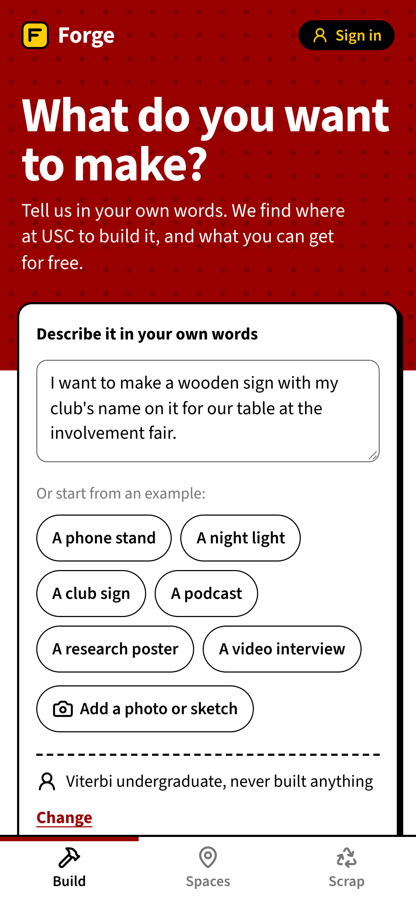
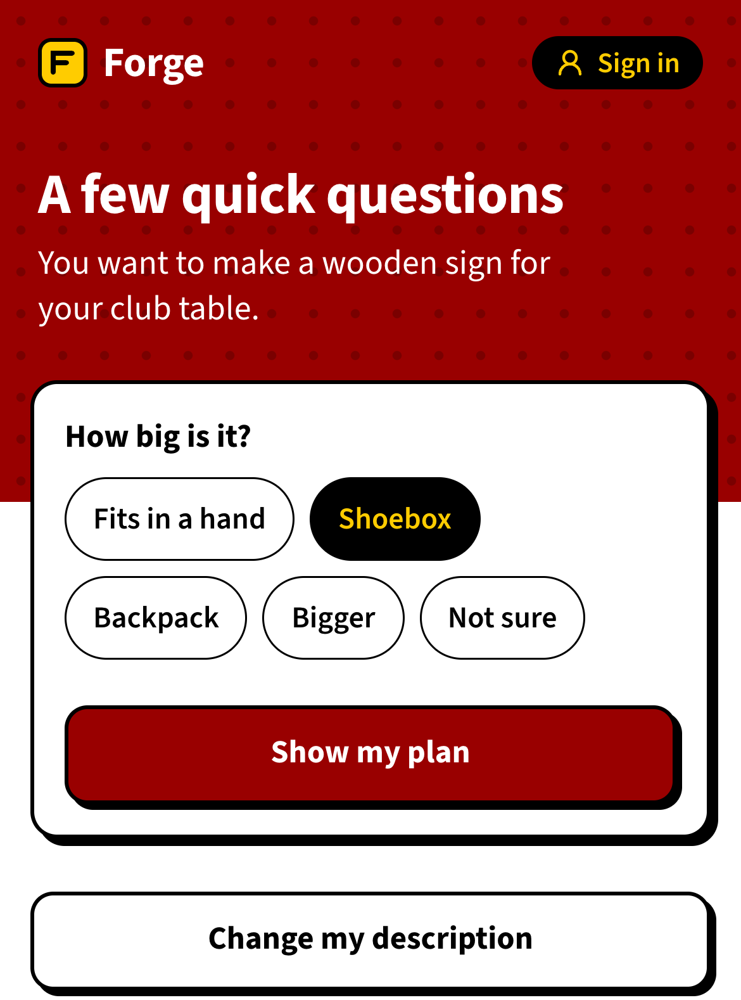
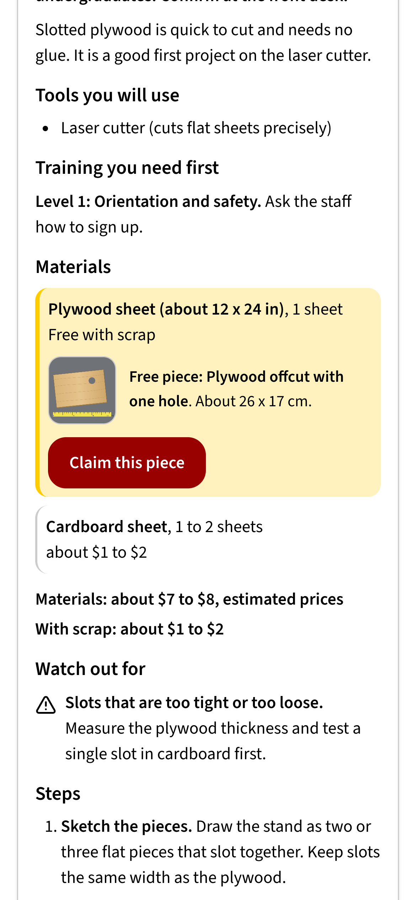
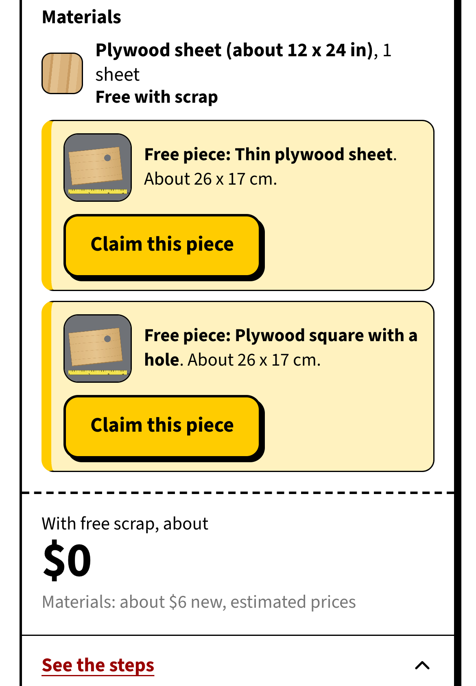
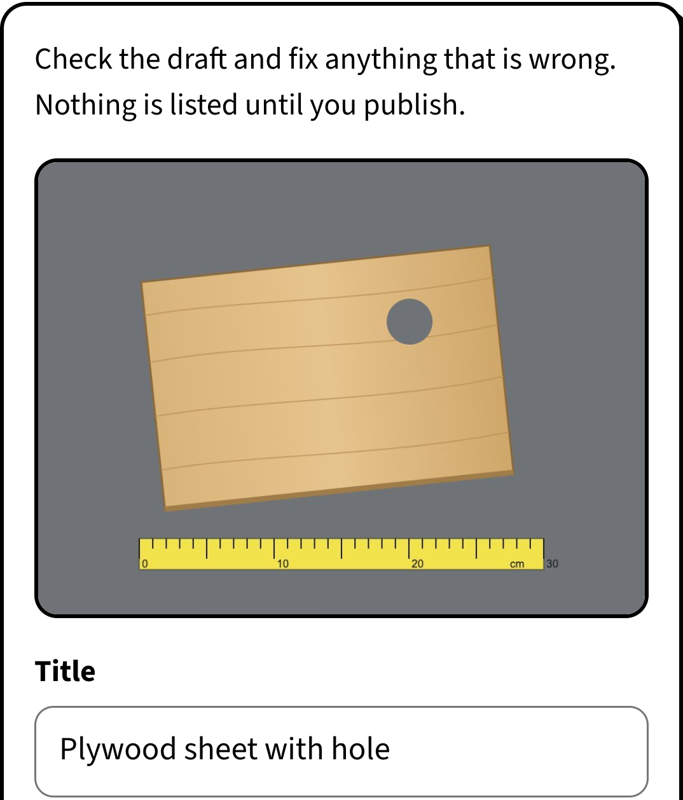
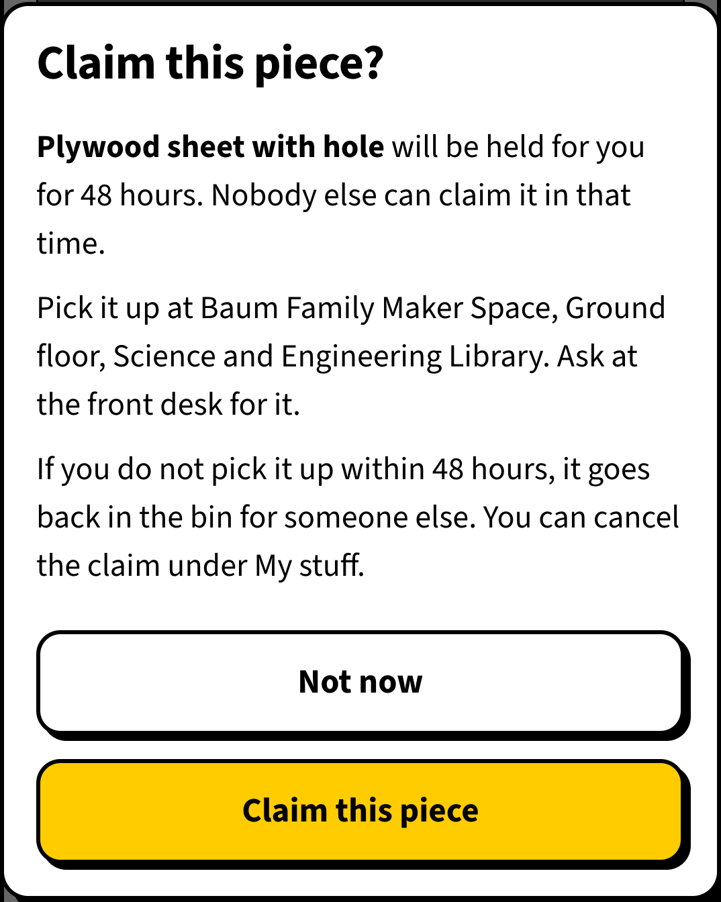
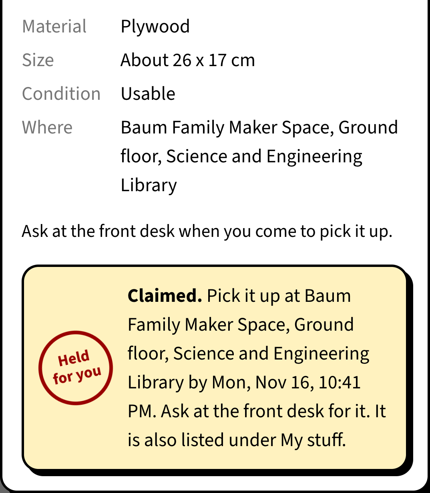
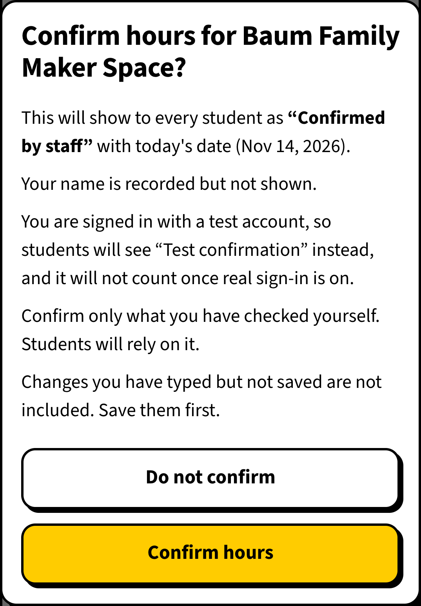

The space, the training, the cost, and the free leftover material that fits.
Jithin Rajan
MS Computer Science. Robotics Engineer at the Baum Family Maker Space.
AI@USC Hackathon, November 2026. Student project. Not an official USC service.

A first-year has an idea and a sketch, but not the words. You can't search for a “laser cutter” if you have never heard of one.
So staff answer the same “how do I make this?” again and again.
Meanwhile, students ask the Maker Space desk for failed prints, leftover wood and scrap metal. Nothing matches them up.
1Say it in your own words.
“I want to make a wooden sign with my club's name on it for our table at the involvement fair.”
Real screens from the running app on a live model. The scrap pieces are test pieces.
2Tap an answer. Asked only if it changes the plan.

3Where to go, whether you can get in, what to train on.

4What it costs, and what leftover material is free.

1Staff photograph a leftover. AI drafts the listing; staff check it before it goes live.

2A student signs in and claims it. If 5 claim at once, exactly 1 gets it (race-tested).

3Held for 48 hours. Pickup is at the front desk, with staff.

Test piece shown.
89
of 89 unit tests pass.They cover grounding, cost, access rules and labels.
Next.js on Vercel. Supabase. Gemini API.

8
campus spaces are listed today, one data file each.Every fact reads “Estimated” until that space's staff press Confirm. None are confirmed yet: that is the pilot's first job.
Built inside the pilot space. Jithin works at the Maker Space as a Robotics Engineer.
Next: USC single sign-on with university IT, then more spaces.
Jithin Rajan, MS Computer Science. Robotics Engineer at the Baum Family Maker Space.
Student project. Not an official USC service.
forge-beta-hazel.vercel.appNo login needed to plan a build.